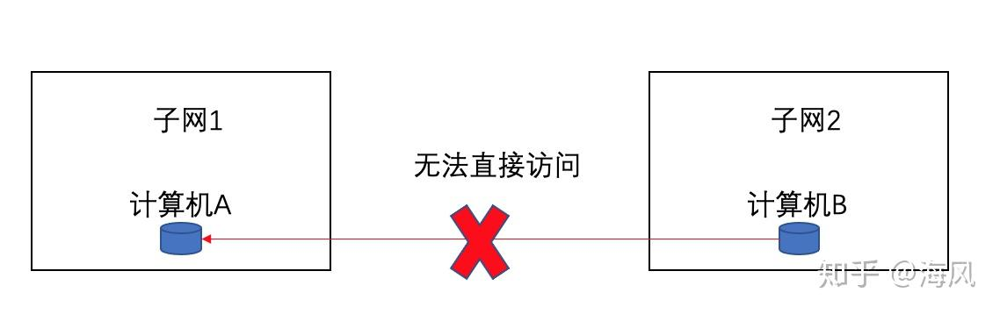
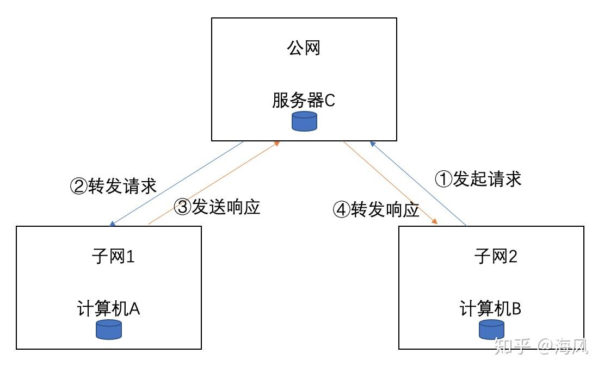

ssh反向隧道实现内网穿透
2020-10-18 第一次在知乎写文章，有写得不好的地方请见谅哈~
为什么需要内网穿透
当我们有一台性能较好的计算机（比如服务器、图形工作站等），但是这台计算机是在一个内网中（公司、学校或家庭内网），由于其没有公网 IP 地址，不在同一个内网的其它电脑未必能直接连接到它，内网穿透可以解决这个问题。

实现原理
利用一台有公网 IP 地址的服务器进行请求转发，这台服务器起到“桥梁”的作用。

内网穿透工具
原文列举了 ngrok、frp 和远程桌面工具。这里使用一种较为简单的方法：SSH 反向隧道。
目前机器状况
迁移版用文档示例地址替换原文 IP。
| 机器编号 | IP | 用户名 | 描述 |
|---|---|---|---|
| A | 10.10.32.2 | user_A | 目标服务器，在内网中 |
| B | 203.0.113.10 | user_B | 转发连接的服务器 |
| C | 192.168.1.6 | user_C | 装有 SSH 客户端的计算机 |
使用流程
旧版示例曾把转发端口对外公开。这版保留同样的反向隧道原理，但把 6666 绑定到 B 的回环地址，再通过有授权的 SSH 登录连接；不需要对公网放行 6666，也不要启用全局的 GatewayPorts yes。
计算机 A 向计算机 B 发起 SSH 请求，建立反向通道。在 A 上执行，并按提示完成 B 的登录：
ssh -NT -o ExitOnForwardFailure=yes -R 127.0.0.1:6666:localhost:22 user_B@203.0.113.10这条命令将 B 回环地址的 6666 端口连接到 A 的 22 端口。在 C 上，先登录 B，再从 B 通过 6666 连接 A：
# 在 C 上
ssh user_B@203.0.113.10
# 在 B 上
ssh -p 6666 user_A@127.0.0.1补充：长期保持连接
原文试过 autossh，也写过一个 shell 循环。但仅检查本机 22 端口是否在监听，不能判断反向隧道是否还在线。要维持长期连接，应让 SSH 在连接失效或无法绑定端口时退出，再由 autossh 或进程管理器重启。初次验证时先以前台命令观察错误。
还有其它的像配置 SSH 密钥、使用 SSH config 等，可以参考远程部署笔记。
本文首次发布于知乎，查看知乎原文。